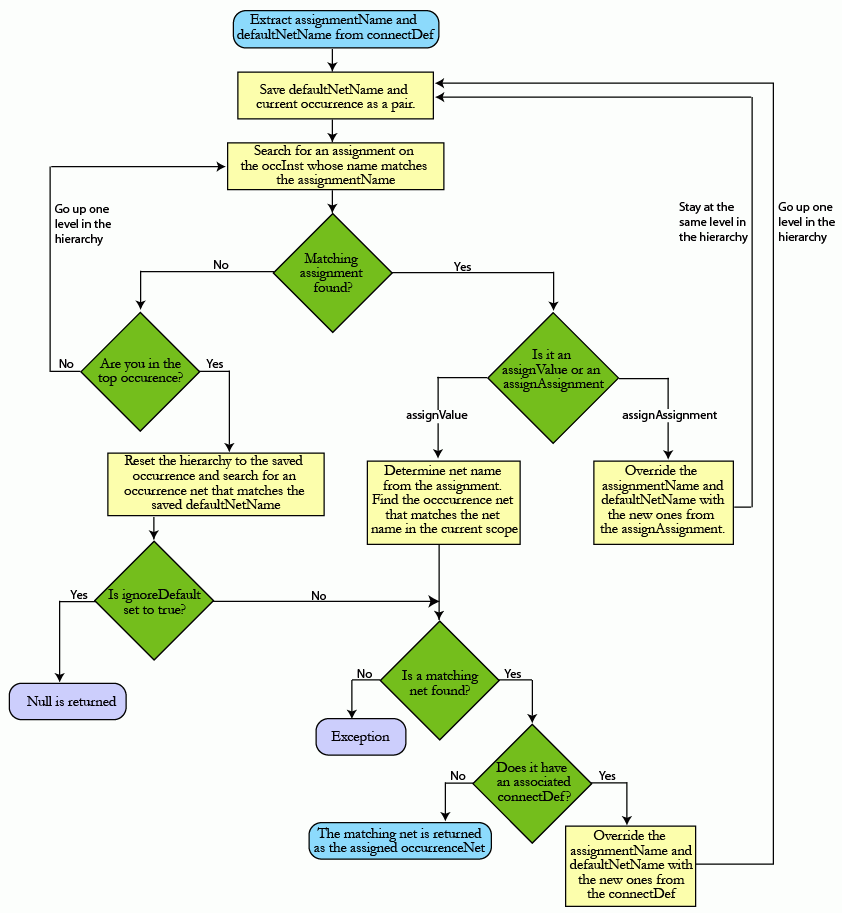

|
 |
 |
||||||
|
|
|
||||||
OpenAccess let applications specify the rules for inherited connections using connection definitions (on nets and terminals) and assignments (on instances) in both the block and module domains. These connection definitions and assignments become visible in the occurrence domain on corresponding occurrence nets, terminals, and instances. While the connection definitions and assignments can only be added, updated, or removed from the block and module domains, the changes are propagated automatically to the occurrence domain.
This document uses the following terminology:
Refer to the documentation for oaConnectDef, oaModConnectDef and oaOccConnectDef and their derived classes for information on connection definitions in the block, module, and occurrence domains respectively. Refer to the documentation for oaAssignment, oaModAssignment and oaOccAssignment and their derived classes for information on assignments in the block, module, and occurrence domains respectively.
Both connection definition and assignment objects have corresponding observers that inform the application when these objects are created, modified, or destroyed.
An application can set up inherited connections by associating the proper connection definitions and assignments with nets, terminals, and instances in the hierarchy. The database can use this specification and a set of look-up rules to determine what the assigned occurrence net is for a user specified terminal, instTerm, or a net in the occurrence domain. (Determining the assigned occurrence net for another occurrence net is provided for diagnostic use only.)
OpenAccess does not assign the occurrence net automatically. Applications need to query the assigned net and make the actual connection as needed.
The query for an assigned net always returns the occurrence net using the inherited connections specification regardless of whether or not an explicit connection existed. This is because the query is directly related to the user specification and should not depend on whether or not an instTerm has a physical connection. If an application needs to consider the explicitly connected net, it must make that check independently, then query the assigned occurrence net as needed.
The query for the assigned net also helps to ensure that the net meets the inherited connection specification after the application has assigned the net.
The OpenAccess implementation supports the concept of scoped global nets. A scoped global net is implemented at a level in the hierarchy and has a connectDef that maps it to a non-global net. The scoped global net appears as a global net at all occurrence levels below the hierarchy in which there is a connectDef associated with the global net that indicates that a non-global net should be used instead.
The sections that follow present the look-up rules that OpenAccess uses to determine the assigned occurrence net for a terminal, instTerm, or a net in the occurrence domain.
OpenAccess must first get access to the effective connectDef that applies to the occTerm, occInstTerm, or occNet. If an effective connectDef cannot be found, this implies that the inherited connections specification has not been set up correctly by the application. In this case, a NULL value is returned without attempting to search for an assigned occurrence net in the hierarchy.
The rules for obtaining the connectDef for each of these objects are different and are outlined in the sections that follow:
Once the connectDef is determined, the search for the occurrence net uses the common rules for determining inherited connections with a bottom-up hierarchy traversal as demonstrated in the process flow.
OpenAccess determines if the occTerm has an associated connectDef. If so, the connectDef is used to determine the assigned net. If the occTerm does not have an associated connectDef, OpenAccess checks the occTerm’s internal net to see if it has an associated connectDef. If so, this connectDef is used to determine the assigned net; Otherwise the connectDef cannot be determined and a NULL is returned for the assigned occurrence net.
The hierarchy traversal and search for the assigned net begins by going a level up in the hierarchy and searching for assignments on the occInst whose occurrence’s occTerm was queried.
OpenAccess obtains the modTerm from the module of the modInst that corresponds to the modInstTerm whose occurrence occInstTerm is being queried for an assigned occurrence net. Next, OpenAccess determines if the modTerm has an associated connectDef (oaModConnectDef). If so, then the connectDef is used to determine the assigned net. If the modTerm does not have an associated connectDef, the modTerm’s internal net is checked to see if it has an associated connectDef. If so, this connectDef is used to determine the assigned net; Otherwise the connectDef cannot be determined and a NULL is returned for the assigned occurrence net.
The hierarchy traversal and search for the assigned net begins at the current level of the hierarchy by searching for assignments on the occInst associated with the occInstTerm being queried.
OpenAccess determins if the occNet has an associated connectDef. If so, this connectDef is used to determine the assigned occurrence net; Otherwise NULL is returned as the assigned net cannot be determined.
The hierarchy traversal and search for the assigned net begins by going a level up in the hierarchy and searching for assignments on the occInst whose occurrence’s occNet was queried.

Return to Programmers Guide topics

Copyright © 2001-2010 Cadence Design Systems, Inc.
All rights reserved.